The MIT 5-Step DP Framework & 1D Recurrences
Expanded from handwritten competitive coding study notes (07_DP_MIT.pdf, 01_Vid_1.pdf, 08_Vid_2.pdf, 09_Vid_3.pdf, 10_Vid_5.pdf)
Dynamic Programming turns exponential brute-force search into polynomial-time algorithms whenever recursive choices revisit the same smaller subproblems and the dependencies among those subproblems form a Directed Acyclic Graph (DAG). This chapter combines the theoretical backbone from MIT 6.006 (Fibonacci, DAG acyclicity, Text Justification, Perfect-Information Blackjack, Matrix Chain Parenthesization, and Piano Fingering) with the four-stage competitive coding progression—Recursion $\to$ Memoization $\to$ Tabulation $\to$ $O(1)$ Space Optimization—on classic 1D DP problems.
1. Fibonacci & the Four-Stage DP Pipeline
Consider the Fibonacci sequence $F_1 = F_2 = 1$ (or 0-indexed $F_0 = F_1 = 1$ in the staircase convention) with recurrence $F_n = F_{n-1} + F_{n-2}$. Writing the mathematical definition directly as recursion produces an exponential call tree:
$$T(n) = T(n-1) + T(n-2) + O(1) \;\ge\; 2\,T(n-2) \;=\; \Omega\bigl(2^{n/2}\bigr)$$Expanding $F_n \to (F_{n-1}, F_{n-2})$ immediately reveals overlapping subproblems: $F_{n-2}$ is recomputed from scratch inside $F_{n-1}$, $F_{n-3}$ is computed three times, and so on. Caching each computed value in a dictionary or array collapses the exponential tree into a linear spine $f(n) \to f(n-1) \to \dots \to f(1)$ where every right-branch lookup returns in $O(1)$.
| Stage | Mechanism | Time Complexity | Space Complexity |
|---|---|---|---|
| 1. Naive Recursion | Recomputes overlapping subtrees blindly | $O(2^n)$ ($\Theta(\varphi^n)$) | $O(n)$ call stack |
| 2. Memoization (Top-Down) | Check dp[n] != -1 before recursing |
$O(n)$ ($n$ states $\times\; O(1)$) | $O(n)$ stack $+ O(n)$ array |
| 3. Tabulation (Bottom-Up) | Seed base cases; loop $i = 2 \dots n$ | $O(n)$ | $O(n)$ array (no stack) |
| 4. Space Optimization | Keep only rolling scalars prev, prev2 |
$O(n)$ | $O(1)$ |
#include <bits/stdc++.h>
using namespace std;
// Stage 2: Top-Down Memoization — O(n) time, O(n) stack + O(n) dp
long long fibMemo(int n, vector<long long>& dp) {
if (n <= 1) return 1; // 0-indexed convention from Vid 1: 1, 1, 2, 3, 5, 8...
if (dp[n] != -1) return dp[n];
return dp[n] = fibMemo(n - 1, dp) + fibMemo(n - 2, dp);
}
// Stage 3: Bottom-Up Tabulation — O(n) time, O(n) dp (eliminates recursion stack)
long long fibTab(int n) {
if (n <= 1) return 1;
vector<long long> dp(n + 1, 0);
dp[0] = 1;
dp[1] = 1;
for (int i = 2; i <= n; ++i) {
dp[i] = dp[i - 1] + dp[i - 2];
}
return dp[n];
}
// Stage 4: O(1) Space Optimization — only the previous two states matter
long long fibSpaceOpt(int n) {
if (n <= 1) return 1;
long long prev2 = 1, prev = 1;
for (int i = 2; i <= n; ++i) {
long long curr = prev + prev2;
prev2 = prev;
prev = curr;
}
return prev; // prev holds the answer after the last iteration
}2. Topological Order & Why Subproblems Must Form a DAG
In bottom-up DP, iterating $k = 1, 2, \dots, n$ works because it visits the subproblem dependency graph in topological order: every edge $(F_{k-2} \to F_k)$ and $(F_{k-1} \to F_k)$ points strictly left-to-right.
Why Cyclic Dependencies Break Dynamic Programming
Suppose we try to compute single-source shortest paths $\delta(s, v)$ on a graph containing a directed cycle $a \to v \to b \to a$ by writing the naive recurrence:
$$\delta(s, v) = \min_{(u, v) \in E} \bigl(\delta(s, u) + w(u, v)\bigr), \qquad \delta(s, s) = 0$$Unrolling this equation around the cycle yields a circular dependency:
$$\begin{aligned} \delta(s, v) &= \delta(s, a) + w(a, v) \\ &= \delta(s, b) + w(b, a) + w(a, v) \\ &= \underbrace{\delta(s, v)}_{\text{not yet computed!}} + w(v, b) + w(b, a) + w(a, v) \end{aligned}$$Top-down memoization enters infinite recursion, and bottom-up DP has no topological ordering! To apply DP to graphs with cycles (Bellman-Ford), you must unroll the graph into layers $\delta_k(s, v)$ = shortest path using $\le k$ edges, so transitions go strictly $(k-1, u) \to (k, v)$ and restore a DAG.
3. MIT's 5-Step DP Checklist & Classic Applications
The 5-Step Recipe (Erik Demaine, MIT 6.006)
- Define subproblems and count $\#\text{subproblems}$. For a sequence $x$ of length $n$, try suffixes $x[i:]$ ($\Theta(n)$), prefixes $x[:i]$ ($\Theta(n)$), or substrings $x[i:j]$ ($\frac{n(n+1)}{2} = \Theta(n^2)$).
- Guess the first (or last) local choice and count $\#\text{choices}$.
- Relate subproblem solutions via a recurrence and compute non-recursive $\text{time/subproblem}$.
- Recurse & memoize OR build a bottom-up table—verifying topological order (DAG).
- Solve the original problem, analyze $\text{Total Time} = (\#\text{subproblems}) \times (\text{time/subproblem})$, and store parent pointers
parent[state] = argmin/argmax(...)if you need to reconstruct the actual choices.
3.1 Text Justification (LaTeX Line Breaking)
Given $n$ words of lengths $l_0, l_1, \dots, l_{n-1}$ and page width $W$, split the paragraph into lines minimizing total cubic whitespace badness (used by Knuth-Plass / LaTeX so one terrible loose line is penalized much more heavily than three slightly loose lines):
$$\text{badness}(i, j) = \begin{cases} \bigl(W - \text{totalWidth}(i, j)\bigr)^3 & \text{if words } [i, j) \text{ fit on one line} \\ +\infty & \text{otherwise} \end{cases}$$- 1. Subproblems: Suffixes
words[i:]for $i \in \{0, 1, \dots, n\}$ $\implies \Theta(n)$ subproblems. - 2. Guess: Where to start the second line, i.e., index $j \in \{i+1, \dots, n\}$ $\implies n - i = O(n)$ choices.
- 3. Recurrence & Base Case: $\text{DP}(n) = 0$ (zero words remaining costs $0$), and for $i < n$: $$\text{DP}(i) = \min_{j \in [i+1,\, n]} \Bigl(\text{badness}(i, j) + \text{DP}(j)\Bigr)$$
- 4. Topological Order: $\text{DP}(i)$ depends on $\text{DP}(j)$ with $j > i$, so compute from end to beginning: $i = n, n-1, \dots, 0$.
- 5. Original Problem & Reconstruction: Answer is $\text{DP}(0)$ in $\Theta(n) \times O(n) = O(n^2)$ time. Recording
parent[i] = best_jrecovers all line breaks by following $0 \to \text{parent}[0] \to \text{parent}[\text{parent}[0]] \dots$ until $n$.
pair<long long, vector<int>> justifyText(const vector<string>& words, int pageWidth) {
int n = (int)words.size();
const long long INF = (1LL << 60);
vector<long long> dp(n + 1, INF);
vector<int> parent(n + 1, n);
dp[n] = 0; // Base case: empty suffix costs 0
for (int i = n - 1; i >= 0; --i) {
int lineLen = 0;
for (int j = i + 1; j <= n; ++j) {
lineLen += (int)words[j - 1].size() + (j > i + 1 ? 1 : 0);
if (lineLen > pageWidth) break; // Further words won't fit either
long long slack = pageWidth - lineLen;
long long badness = slack * slack * slack; // (W - width)^3
if (dp[j] != INF && badness + dp[j] < dp[i]) {
dp[i] = badness + dp[j];
parent[i] = j; // Remember which guess was optimal
}
}
}
vector<int> lineStarts;
for (int cur = 0; cur < n; cur = parent[cur]) lineStarts.push_back(cur);
return {dp[0], lineStarts};
}3.2 Perfect-Information Blackjack
Suppose the entire deck $c_0, c_1, \dots, c_{n-1}$ is known in advance, and you play repeated $\$1$-bet hands against a deterministic dealer (who hits below 17 and stands on $\ge 17$):
- Subproblems: Suffix $c_i:$ representing the remaining deck when $i$ cards have already been dealt ($\Theta(n)$ states).
- Guess: How many times the player chooses to hit in the current hand ($0 \le h \le n - i$, so $O(n)$ choices).
- Recurrence: Once the player's $h$ hits are fixed (and haven't busted), the dealer's hits $d$ are completely forced, advancing the deck to $j = i + 4 + h + d$ with outcome $\in \{-1, 0, +1\}$: $$\text{BJ}(i) = \max_{\substack{h \ge 0 \\ \text{valid hand}}} \Bigl(\text{outcome}(i, h) + \text{BJ}(j)\Bigr)$$
- Complexity: $\Theta(n)$ suffixes $\times\; O(n)$ hit choices $= O(n^2)$ time (if dealer simulation is precomputed/amortized; $O(n^3)$ if simulated from scratch per $h$).
3.3 Matrix Chain Multiplication (Parenthesization)
Matrix multiplication is associative—$(AB)C = A(BC)$—but parenthesization drastically alters arithmetic cost. As sketched in the notes, multiplying $(n \times n) \cdot (n \times n) \cdot (n \times 1)$ as $((AB)v)$ performs $O(n^3)$ operations, whereas $(A(Bv))$ multiplies matrix-by-vector twice in $O(n^2)$ (or $O(n^2)$ vs. $O(n)$ for outer-product chains $(n \times 1)(1 \times n)(n \times 1)$).
- Why prefixes/suffixes fail: After splitting $(A_i \dots A_k) \cdot (A_{k+1} \dots A_j)$, both halves are arbitrary contiguous substrings of matrices.
- 1. Subproblems: Optimal cost $\text{DP}(i, j)$ to multiply $A_i \cdots A_j$ for $1 \le i \le j \le n$ ($\Theta(n^2)$ subproblems), where $A_i$ has dimensions $p_{i-1} \times p_i$.
- 2. Guess: The outermost / last multiplication split index $k \in \{i, i+1, \dots, j-1\}$ ($j - i = O(n)$ choices).
- 3. Recurrence: Base case $\text{DP}(i, i) = 0$ (a single matrix requires zero multiplications), and for $i < j$: $$\text{DP}(i, j) = \min_{i \le k < j} \Bigl(\text{DP}(i, k) + \text{DP}(k+1, j) + p_{i-1}\,p_k\,p_j\Bigr)$$
- 4. Topological Order: Increasing chain length $L = j - i + 1 = 2, 3, \dots, n$. Notice the note's remark: "DP $\ne$ shortest path in the DAG" here, because each transition sums two independent subproblems $\text{DP}(i, k) + \text{DP}(k+1, j)$ (a DAG hyperpath / optimal decision tree).
- 5. Complexity: $\Theta(n^2)$ intervals $\times\; O(n)$ splits $= O(n^3)$ time, $O(n^2)$ space.
def matrix_chain_order(p):
"""
p: dimensions list where matrix A_i (1-indexed) has shape p[i-1] x p[i].
Returns (m, s): minimum scalar multiplications and optimal split table.
"""
n = len(p) - 1
m = [[0] * (n + 1) for _ in range(n + 1)]
s = [[0] * (n + 1) for _ in range(n + 1)]
for length in range(2, n + 1): # Topological order: increasing chain length
for i in range(1, n - length + 2):
j = i + length - 1
m[i][j] = float("inf")
for k in range(i, j): # Guess last multiplication split k
q = m[i][k] + m[k + 1][j] + p[i - 1] * p[k] * p[j]
if q < m[i][j]:
m[i][j] = q
s[i][j] = k
return m, s
def format_optimal_parens(s, i, j):
if i == j:
return f"A{i}"
return f"({format_optimal_parens(s, i, s[i][j])}{format_optimal_parens(s, s[i][j] + 1, j)})"
# Handwritten note example: A1 (10x30), A2 (30x5), A3 (5x60)
# m[1][3] = 10*30*5 + 10*5*60 = 1500 + 3000 = 4500 via ((A1A2)A3)
# vs. (A1(A2A3)) = 30*5*60 + 10*30*60 = 9000 + 18000 = 27000!3.4 Piano / Guitar Fingering (State Augmentation)
Given a sequence of $n$ single notes and $F = 5$ fingers, with transition difficulty $d(i, f, i+1, g)$ when playing note $i$ with finger $f$ and note $i+1$ with finger $g$, suffix subproblems $\text{DP}(i)$ alone are insufficient: the cost of moving to note $i+1$ depends on which finger currently rests on note $i$.
State Augmentation
Augment the suffix index $i$ with the current finger $f \in \{1, \dots, F\}$:
$$\text{DP}(i, f) = \min_{g \in \{1, \dots, F\}} \Bigl(\text{DP}(i+1, g) + d(i, f, i+1, g)\Bigr), \qquad \text{DP}(n-1, f) = 0$$Because the starting finger on note $0$ is also free to choose, the original problem minimizes over all $F$ entry states:
$$\text{Answer} = \min_{f \in \{1, \dots, F\}} \text{DP}(0, f)$$The subproblem graph forms an $n$-layer complete bipartite ("neural-network-style") DAG with $n \cdot F$ vertices and $F$ outgoing edges per vertex, running in $O(n F^2)$ time—effectively linear in $n$ for $F = 5$.
4. Climbing Stairs, Striver's 3-Step Shortcut & Frog Jump
4.1 Climbing Stairs & the Index-Action-Aggregate Rule
Starting on stair $0$, you want to reach stair $n$ by climbing $1$ or $2$ steps at a time. For $n = 3$, there are $3$ distinct paths: $(1+1+1)$, $(1+2)$, and $(2+1)$. In the forward suffix formulation from 08_Vid_2, let $f(i)$ be the number of ways to reach stair $n$ from stair $i$:
(Equivalently, counting backward from $n$: $f(n) = f(n-1) + f(n-2)$ with $f(0) = f(1) = 1$, identical to Fibonacci in $O(n)$ time and $O(1)$ space.)
- Represent everything in terms of an index $i$.
- Perform all allowed actions on index $i$ according to the problem statement (guarding out-of-bounds jumps).
- Aggregate according to the question: if asked to count all ways, sum the recursive results; if asked for the minimum / maximum, take $\min(\dots)$ or $\max(\dots)$.
4.2 Frog Jump (Minimum Energy)
A frog starts at stair $0$ (1st step in 1-based statement) of an $n$-staircase with heights $h[0 \dots n-1]$. Jumping from stair $i$ to $j \in \{i+1, i+2\}$ costs $|h[i] - h[j]|$ energy. Find the minimum total energy to reach stair $n - 1$.
Applying the 3-step recipe backward ($f(i) =$ min energy to reach index $i$ from $0$, base case $f(0) = 0$):
$$f(i) = \min\Bigl(f(i-1) + |h[i] - h[i-1]|,\;\; \underbrace{f(i-2) + |h[i] - h[i-2]|}_{\text{only valid when } i > 1}\Bigr)$$Two Subtle Bugs to Watch For in Frog Jump
- Absolute difference: Jumping to a lower stair still costs positive energy $|h[i] - h[j]|$, never signed $h[j] - h[i]$.
- Boundary jump overshooting: In forward recursion ($i \to i+1, i+2$), returning $0$ on $i > n-1$ would let a frog at $n-2$ jump past the top to $n$ for free! Instead, set $f(n-1) = 0$ and guard `if (i + 2 < n)` (or return $+\infty$ for $i \ge n$).
int frogJump(const vector<int>& h) {
int n = (int)h.size();
if (n <= 1) return 0;
int prev2 = 0, prev = 0; // f(0) = 0
for (int i = 1; i < n; ++i) {
int oneStep = prev + abs(h[i] - h[i - 1]);
int twoStep = (i > 1) ? (prev2 + abs(h[i] - h[i - 2])) : INT_MAX;
int curr = min(oneStep, twoStep);
prev2 = prev;
prev = curr;
}
return prev; // O(n) time, O(1) space
}5. Maximum Sum of Non-Adjacent Elements (House Robber)
Given an array $a[0 \dots n-1]$ of non-negative values, select a subsequence with no two adjacent indices maximizing the total sum. Every subsequence selection DP revolves around the binary Pick vs. Not-Pick decision at index $\text{ind}$:
- State: $f(\text{ind}) =$ maximum non-adjacent sum achievable within prefix $a[0 \dots \text{ind}]$, called initially at $\text{ind} = n - 1$.
- Base Cases:
ind == 0$\implies$ return $a[0]$ (if recursion reaches index $0$, index $1$ was not picked, so picking $a[0] \ge 0$ is always optimal).ind < 0$\implies$ return $0$ (happens when we pick index $1$ and jump to $1 - 2 = -1$).
- Transitions: $$\text{pick} = a[\text{ind}] + f(\text{ind} - 2), \qquad \text{notPick} = 0 + f(\text{ind} - 1), \qquad f(\text{ind}) = \max(\text{pick}, \text{notPick})$$
Dry Run & Overlapping Subproblem Tree on $a = [2, 1, 4, 3]$
Tabulation Pitfalls Caught in 10_Vid_5
- Out-of-bounds
dp[i - 2]at $i = 1$: When converting $f(\text{ind} - 2)$ to bottom-up, $i = 1$ accesses $i - 2 = -1$. Initializeint take = a[i]; if (i > 1) take += dp[i - 2];—or in $O(1)$ space optimization, initializeprev2 = 0so $i = 1$ naturally adds $0$! - Reading
a[i - 2]instead ofdp[i - 2]: A common slip during manual conversion is adding raw inputa[i - 2]instead of the best prefix sumdp[i - 2]. Always verify that recursive calls $f(\cdot)$ map todp[...], nevera[...].
#include <bits/stdc++.h>
using namespace std;
// 1. Memoization: O(n) time, O(n) stack + O(n) dp
int solveMemo(int ind, const vector<int>& a, vector<int>& dp) {
if (ind == 0) return a[0];
if (ind < 0) return 0;
if (dp[ind] != -1) return dp[ind];
int pick = a[ind] + solveMemo(ind - 2, a, dp);
int notPick = 0 + solveMemo(ind - 1, a, dp);
return dp[ind] = max(pick, notPick);
}
// 2. Tabulation: O(n) time, O(n) dp
int robTabulation(const vector<int>& a) {
int n = (int)a.size();
if (n == 0) return 0;
vector<int> dp(n, 0);
dp[0] = a[0];
for (int i = 1; i < n; ++i) {
int take = a[i] + (i > 1 ? dp[i - 2] : 0);
int notTake = dp[i - 1];
dp[i] = max(take, notTake);
}
return dp[n - 1];
}
// 3. Space Optimization: O(n) time, O(1) auxiliary space
int robSpaceOptimized(const vector<int>& a) {
int n = (int)a.size();
if (n == 0) return 0;
int prev = a[0]; // dp[i - 1]
int prev2 = 0; // dp[i - 2], representing base case ind = -1 -> 0
for (int i = 1; i < n; ++i) {
int take = a[i] + prev2;
int notTake = prev;
int curr = max(take, notTake);
prev2 = prev;
prev = curr;
}
return prev;
}robSpaceOptimized twice in $O(n)$ time and $O(1)$ space: once on $a[0 \dots n-2]$ (excluding the last house) and once on $a[1 \dots n-1]$ (excluding the first house), and return their maximum.
From the Handwritten Notes
Expand the original handwritten pages below to inspect the exact derivations, dry runs, and annotations:
View original note — MIT DP Lecture 1 (Page 1): Naive vs. Memoized Fibonacci & Recursion Tree

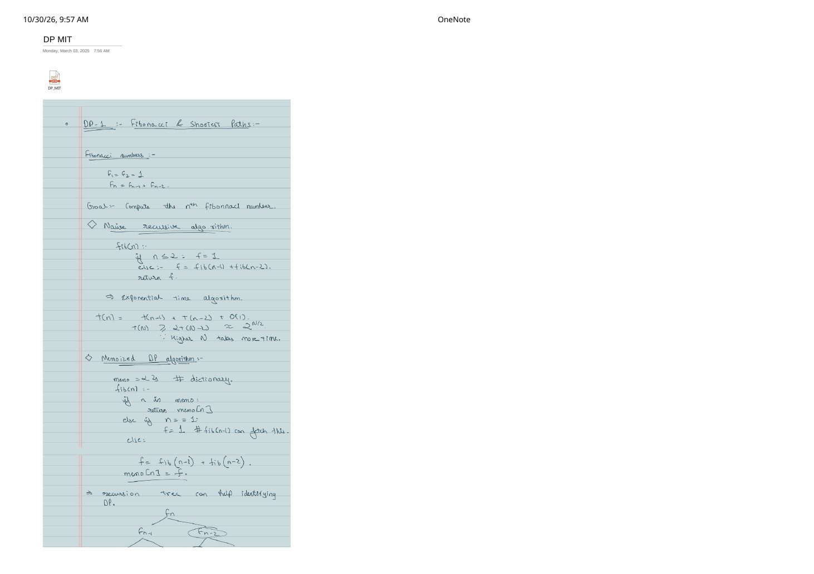
07_DP_MIT.pdf p.1 — Exponential $T(n) \approx 2^{n/2}$ lower bound and dictionary memoization.View original note — MIT DP Lecture 1–2 (Page 2): Bottom-Up DAGs & Cyclic Shortest-Path Counterexample

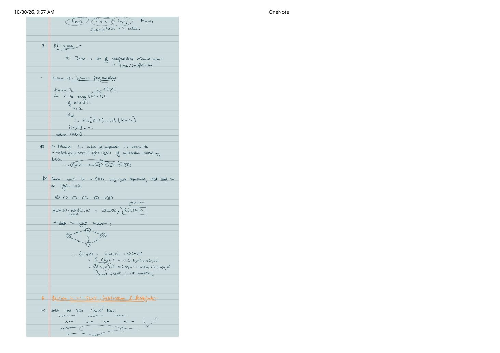
07_DP_MIT.pdf p.2 — DP runtime formula, topological sort of subproblem DAG, and why cycles cause infinite recursion.View original note — MIT DP Lecture 2 (Page 3): LaTeX Text Justification & the 5-Step DP Checklist

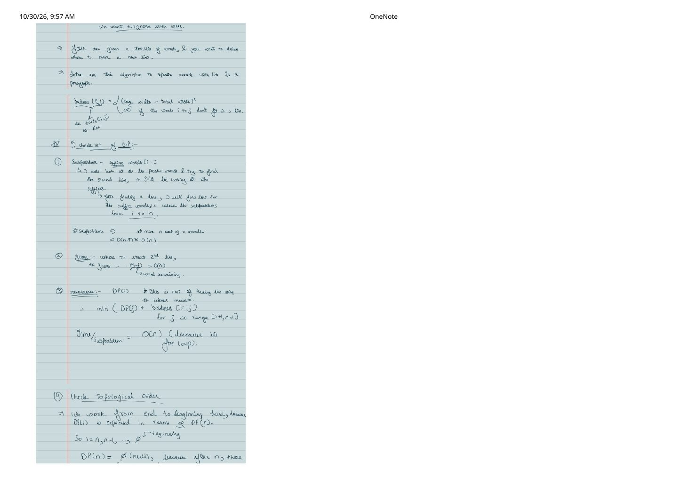
07_DP_MIT.pdf p.3 — Cubic badness $(W - \text{width})^3$, suffix subproblems, guesses, recurrence, and reverse topological order.View original note — MIT DP Lecture 2 (Page 4): Parent Pointers & Perfect-Information Blackjack

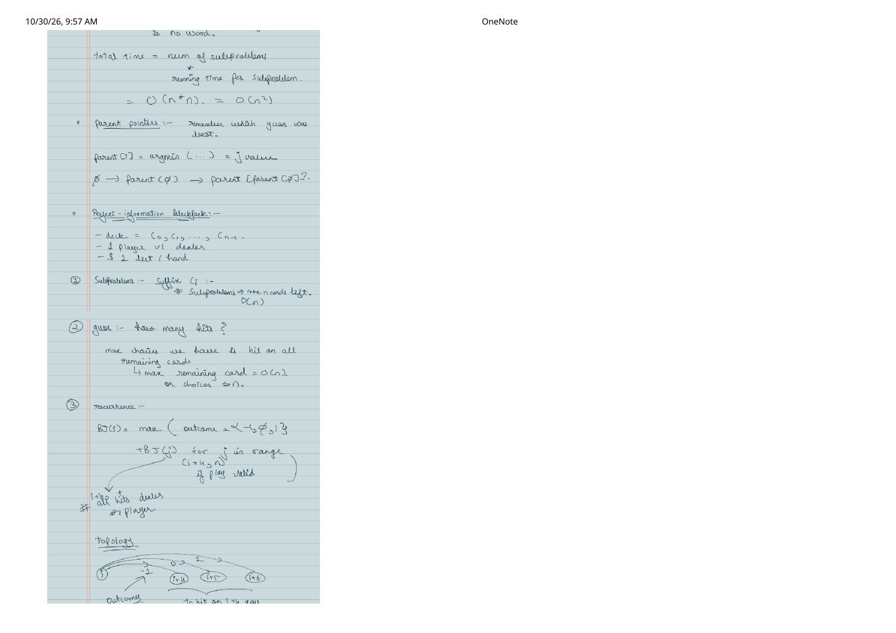
07_DP_MIT.pdf p.4 — Reconstructing optimal line breaks via parent[i] and Blackjack suffix recurrence.View original note — MIT DP Lecture 3 (Page 5): Sequence Subproblem Catalog & Matrix Chain Parenthesization

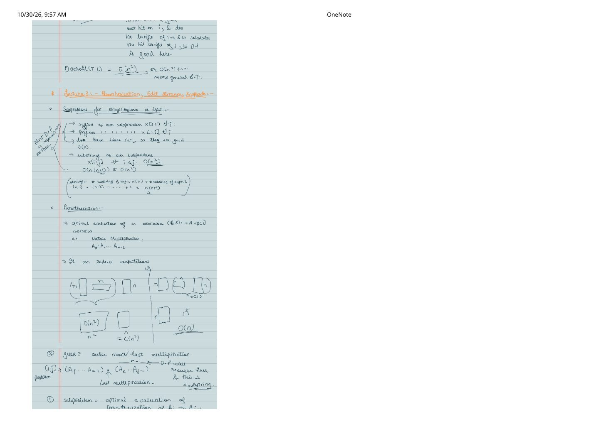
07_DP_MIT.pdf p.5 — Suffixes/prefixes ($O(n)$) vs. substrings ($O(n^2)$), and guessing the last matrix multiplication.View original note — MIT DP Lecture 3 (Page 6): Matrix Chain Recurrence, Python Code & Character Edits

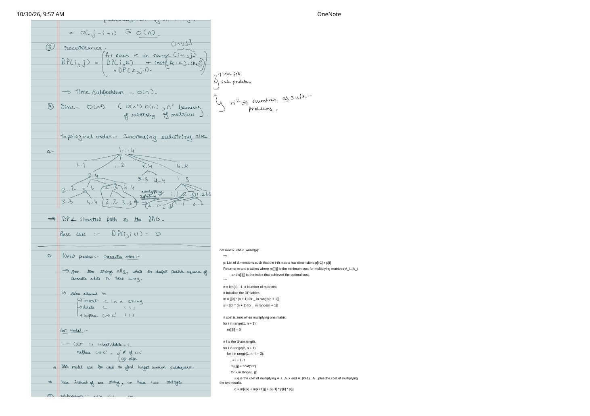
07_DP_MIT.pdf p.6 — $O(n^3)$ parenthesization tree over 1..4, Python matrix_chain_order, and Edit Distance cost model.View original note — MIT DP Lecture 3 (Page 7): Edit Distance 2D DAG &Optimal Parenthesization Printer

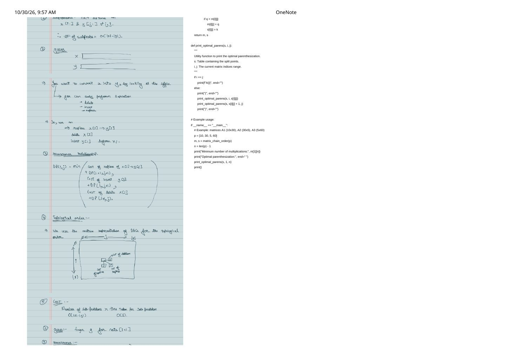
07_DP_MIT.pdf p.7 — Suffix recurrence for Edit Distance, 2D matrix DAG, and print_optimal_parens.View original note — MIT DP Lecture 3 (Page 8): Piano / Guitar Fingering State Augmentation

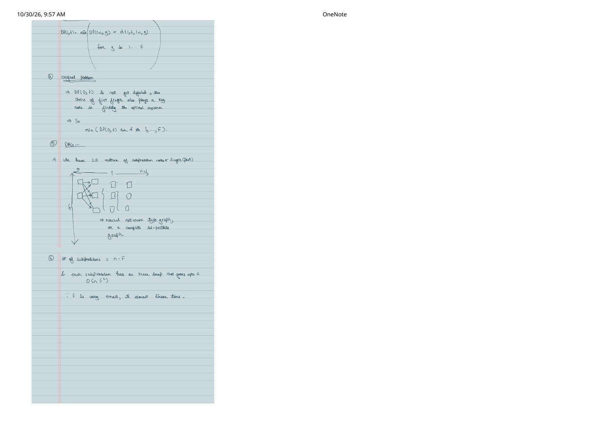
07_DP_MIT.pdf p.8 — $\text{DP}(i, f)$ state augmentation, complete bipartite layered DAG, and $O(nF^2)$ complexity.View original note — MIT DP Notebook Trailing Sheet (Page 9)

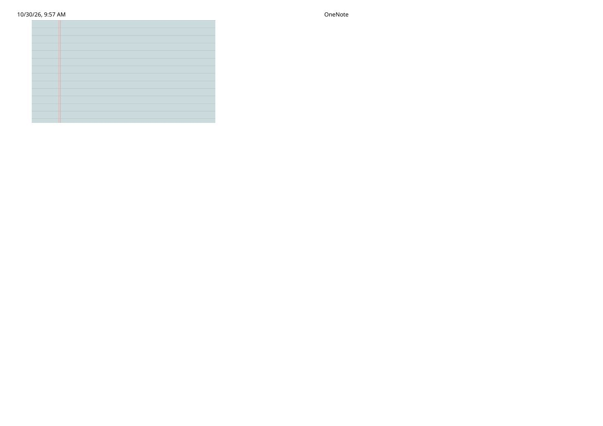
07_DP_MIT.pdf p.9 — Trailing ruled sheet of the MIT 6.006 DP notebook.View original note — Vid 1 (Page 1): Fibonacci Memoization & Stack + Array Space Analysis

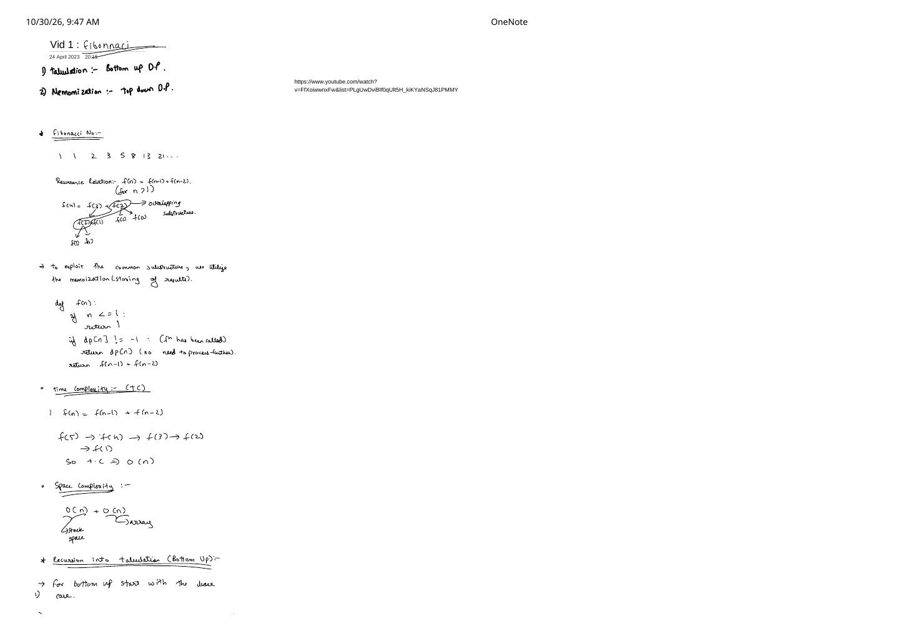
01_Vid_1.pdf p.1 — Top-down memoization vs. bottom-up tabulation definitions and $O(n) + O(n)$ space breakdown.View original note — Vid 1 (Page 2): Fibonacci Tabulation & O(1) Scalar Space Optimization

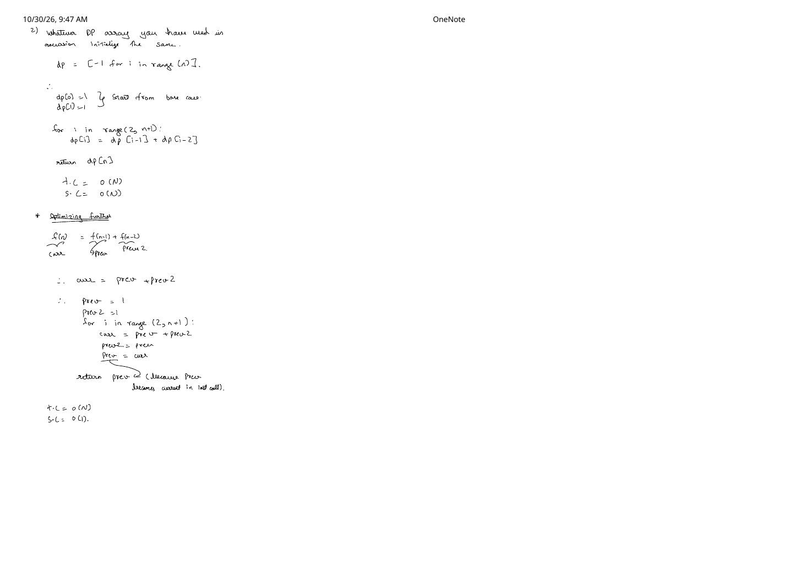
01_Vid_1.pdf p.2 — Converting dp[i] = dp[i-1] + dp[i-2] into curr = prev + prev2.View original note — Vid 2 (Page 1): Climbing Stairs & 1D Recurrence Formulation

08_Vid_2.pdf p.1 — Staircase diagram for $n=3$, forward state $f(i)$, and the 3-step recurrence shortcut.View original note — Vid 2 (Page 2): Count-All-Ways (Sum) vs. Extremum (Min/Max) Aggregation

08_Vid_2.pdf p.2 — Choosing between summation and minimization based on problem phrasing.View original note — Vid 3 (Page 1): Frog Jump Minimum Energy Recurrence

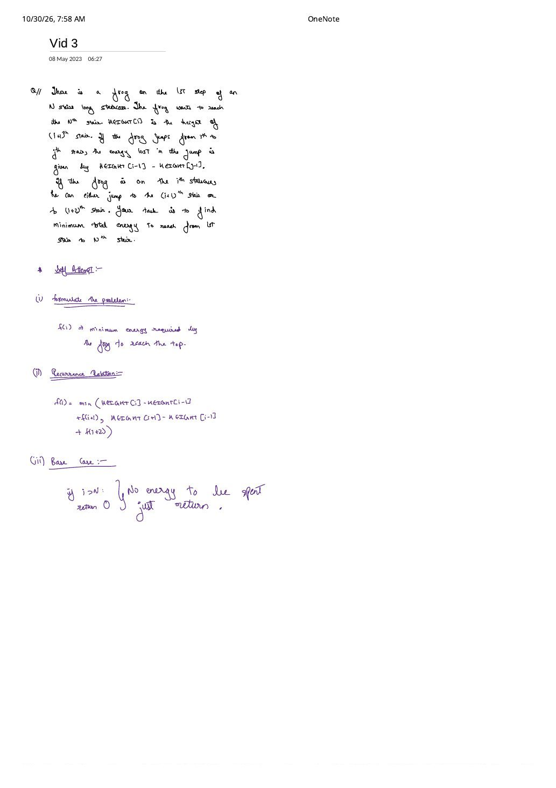
09_Vid_3.pdf p.1 — Formulating $f(i)$ for 1-step and 2-step staircase jumps with height differences.View original note — Vid 5 (Page 1): Max Sum of Non-Adjacent Elements / House Robber Recursion Tree

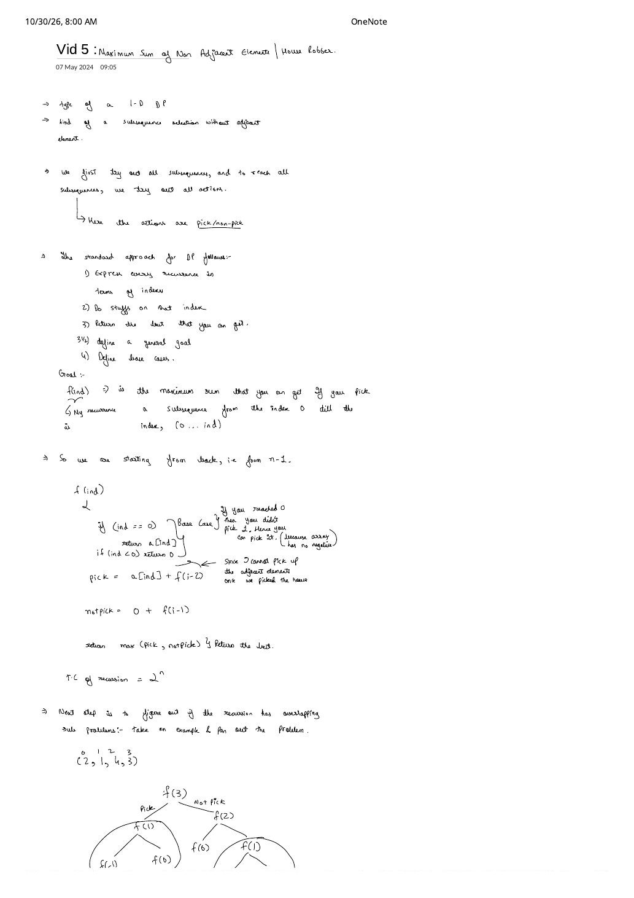
10_Vid_5.pdf p.1 — Pick vs. not-pick recurrence and overlapping subtrees on $(2, 1, 4, 3)$.View original note — Vid 5 (Page 2): Memoization & Handling Negative Indices in Tabulation

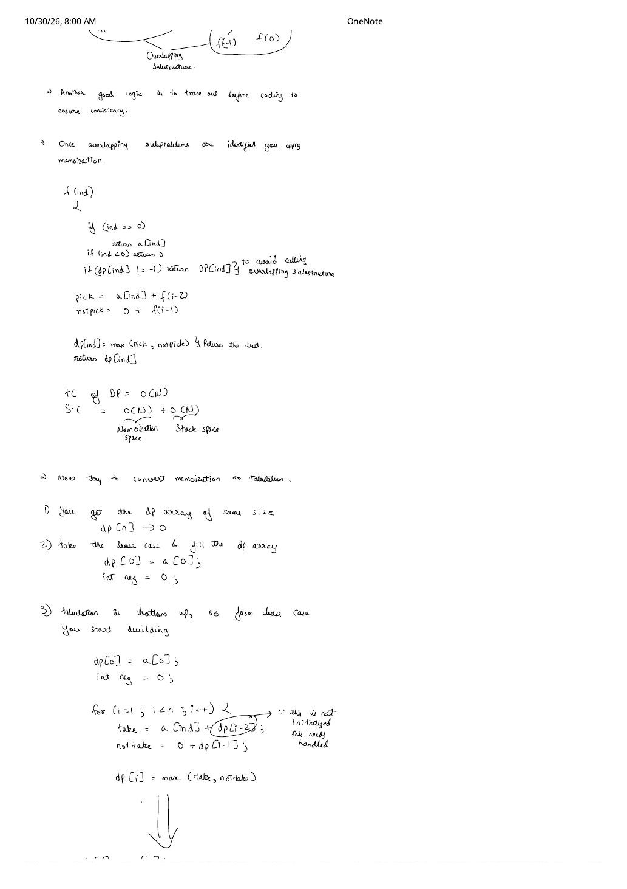
10_Vid_5.pdf p.2 — Caching dp[ind] and spotting the uninitialized dp[i-2] access when $i = 1$.View original note — Vid 5 (Page 3): Guarded Tabulation & O(1) Space Optimization

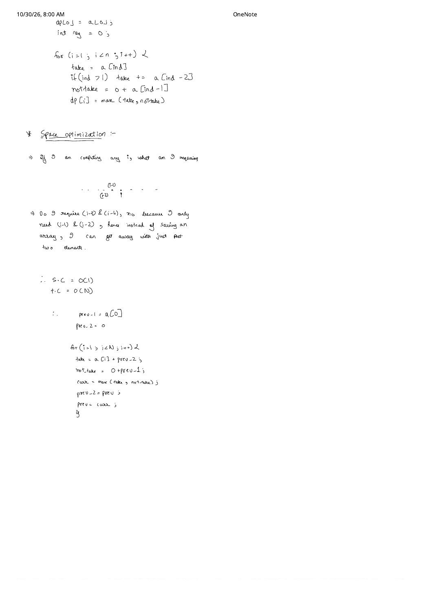
10_Vid_5.pdf p.3 — Rolling two-element window (prev, prev2) achieving $O(N)$ time and $O(1)$ space.